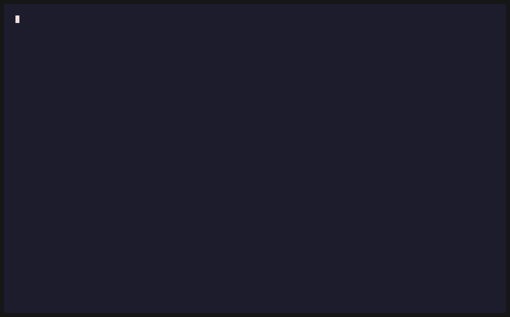

🧭 Hermes L1 · suggest
A stateful planner. Delegates one planning cycle to the gateway, records the plan to memory — and is denied 403 if it asks to operate above L1. Plans; never executes.
A local-first AI governance plane. Every call to a local model is mediated by policy-as-code identity, an enforced L0–L6 autonomy ceiling, egress guardrails, and a structured decision audit — enforced in code, before any model loads, not asserted in a README.
# declares L6 (unbounded) — more autonomy than its mandate ❯ curl :8081/v1/chat/completions -H "$HERMES" -H 'X-Autonomy-Level: 6' -d '{"model":"strategy"…}' {"error":{"code":"autonomy_exceeded","message":"Principal 'hermes' is capped at autonomy L1 (suggest); request declared L6 (unbounded)"}} → HTTP 403 # refused before the model ever loads · audited · re-verified
A principal capped at L1 with models ["strategy"] is
refused the instant it asks for more — autonomy it lacks, or a model it was never granted. Then OpenClaw,
an independent read-only verifier, re-derives that the controls held.

Every request crosses a loopback boundary and runs a fixed gauntlet. Each gate fails closed with a specific status — and authz, autonomy, and rate denials all happen before the model loads, so an unauthorized request never pays for inference.
An adversarial eval suite (OWASP-LLM tagged) re-attacks each control and fails CI on regression; an independent verifier re-derives that they held. Controls aren't claimed — they're proven.
Each component authenticates as its own principal with its own autonomy ceiling — no shared "god" identity. A model may reason about anything; what executes is decided and recorded by the governance plane.

plan → act → verify → record → re-plan
A stateful planner. Delegates one planning cycle to the gateway, records the plan to memory — and is denied 403 if it asks to operate above L1. Plans; never executes.
Capability-denied reviewer (edit/bash/network off, isolation-verified) and an approval-gated apply path: refused without owner approval, confined to a copy, sha256-verified to touch only declared files.
Read-only assurance. Reconciles the audit, metrics, isolation manifests, and policy across nine controls and emits a PASS/FAIL verdict — changing nothing, clearing nothing.
Every mitigation cites the executable proof — an eval ID or unit test that runs in CI — so the threat model stays in lockstep with the code. Loopback → auth → authorization → egress: an attacker must cross every ring, each failing closed and each logged.